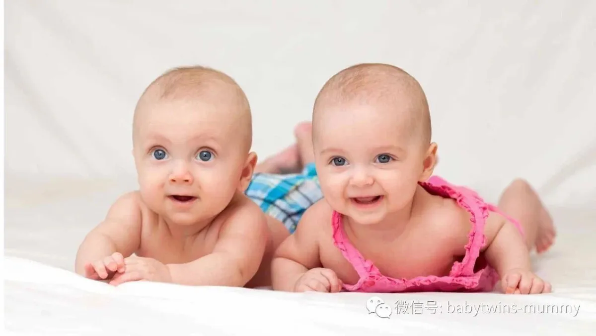
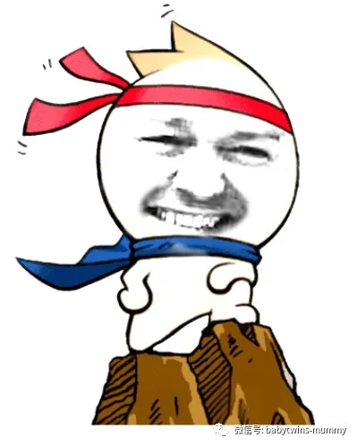
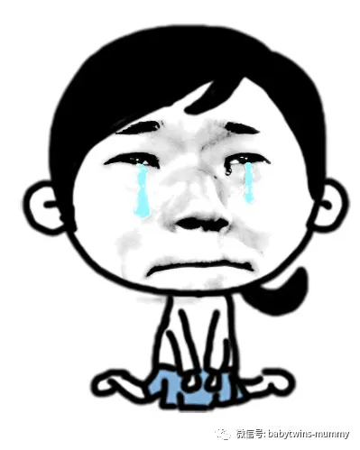
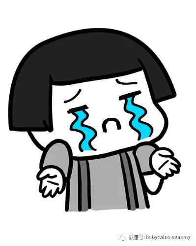
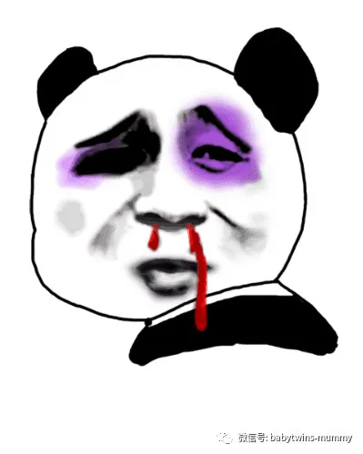
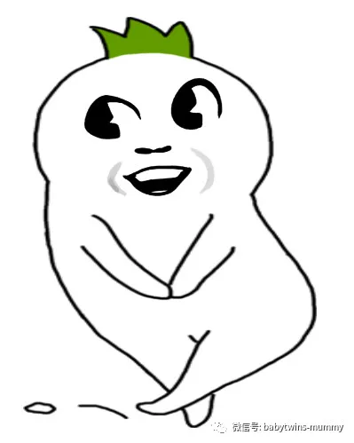
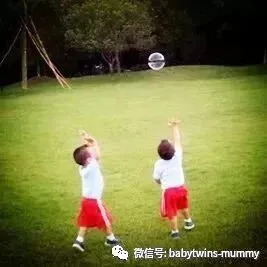

↑点击上方“孖仔帮”免费订阅
当你第一次照B超，医生告诉你，你有双胞胎时，
你是从床上跳起来，一脸惊恐的。
然后，当他们俩都生出来时，
双胞胎的光芒和喜悦，瞬间照亮整个手术室，
你是从床上被人抬出去的。
但看着他们一模一样的小脸小手小脚，你觉得也值了吧！
但随着年龄的增长，他们开始变得不同。
随着年龄的增长，这些差异也会变得更加突出。
所以你开始质疑一些事情。开始问自己，
难道抱错了一个？？？
这是正常的吗？
同卵双胞胎看起来不同吗？
毕竟，他们不是应该看起来完全相同的吗？
事实证明，
同卵双胞胎可能看起来不同。
即使是完全相同的，
但还是有细微差别的。
主要原因是我们的基因组成。
DNA的工作方式变幻莫测，这将会影响我们的外观和行为方式。
01
同卵双胞胎来自同一个卵子，它在怀孕初期分裂成两个卵子。
这意味着你的双胞胎将以完全相同的DNA开始。
但是当你的双胞胎在你的子宫里成熟时，
他们的DNA也会发生轻微的变化。
这可能会导致你的双胞胎看起来有很小的变化，
例如雀斑和胎记，头发颜色，肤色等方面的细微差异。
通常情况下，这种DNA变化相对较小，
除了微小的相貌差异之外不会影响任何东西。
然而，有时纯粹的偶然性意味着你的双胞胎会遭受轻微的突变，
这些突变会改变你真正能看到的东西。
例如，眼睛的颜色，头发的颜色，或者有时甚至是完全不同的肤色！
比如下面这一对一白一黑的双胞胎。
02
当一个婴儿最初被构思时，它就是由一个精子和卵细胞组成的，
它们合并形成一个受精胚胎。
这分成几十万次，并在此过程中不断演变，
最后变成一个人形的小婴儿。
然而，当你有双胞胎时，
这个胚胎在这个过程中很早就分裂开来。
这个分裂一般是在受精后的第二天到第六天之间。
一旦他们分开，两个胚胎会继续分裂。
但是，每次细胞分裂时，
最终结果的DNA与其来源的DNA略有不同。
这意味着你的双胞胎有不同的发展机会，
这取决于这些微小的变化发生的方式和时间。
这也是你的两对双胞胎可能看起来完全相同但行为完全不同的原因。
比如喜欢吃的食物，性格外向还是内箱，是夜猫子还是百灵鸟。。
甚至性取向，一个正常，另一个则可能是同性恋。
总之一句话，
很多偏好都是由遗传决定的。
圆圈妈的经验分享：
其实现在回想起来，圆圈哥俩是不一样的。
记得他们刚出生的时候，
圆圆的头大一点，脸型稍宽。
而圈圈因为位置正好处在下方，接近宫颈口，
由于空间有限，
他的头部被他的哥哥挤得尖尖的，脸型相对较长。
临产前的一次B超，
医生说：右下方的那个崽被欺负得不成样了，头都变形了！
生出来之后，果然。头一个大，一个小。
这成为了我刚开始辨认他们哥俩的唯一方法！
可是很快，因为他们老家的啥子破习俗，
新生儿要带帽子，即使那会儿正是三伏天！
带上帽子之后，哥俩真的是完全分不出了。
只好哥哥左手一个银镯子
弟弟右手一个银镯子。
渐渐地等他们长开了，不用看手镯子了。
凭这当妈的第六感基本上可以辨认出来了，
可是这仅限于，当哥俩站在一块的情况下。
如果这个时候哥哥出现，下一秒换弟弟出现。
不带你这么整人的！
对不起，我需要捋一捋。
有时候哥俩背对着我，我也会搞不清谁是谁。
这个时候，我会两个人的名字都叫一遍，
等他们都回头了。
哈。不就认出来了嘛！
总的来说，同卵双胞胎的他们真的很像！
分分钟能把你整晕的意思！
但是，当妈的我也不是吃素的。
已经总结了他们的一些细小差异。
哥哥略显娇气像女孩子。
弟弟比较男子汉，性格较强势。
如果他们打架，最先哭的那个肯定是哥哥！
哥哥身高上稍微高一点，这可能是他平时就吃得多有关，
也有可能是他得到他爸的基因多一点。
弟弟的思维较灵活，喜欢动脑的游戏。
哥哥比较懒，喜欢直接点的东西。
哥哥的身体协调能力较好，会跟着动画片上的舞蹈一起跳，
而且还有模有样的哦。
弟弟的专注能力较好，玩喜欢的玩具可以坚持一个上午而雷打不动。
有时候会被问到怎样区分双胞胎哥俩。
这个问题真不好说。
我只能说，都是凭感觉！哈哈！
*作者简介：圆圈妈，家有孖仔男两枚，立志做一名合格的80后全职妈妈。
个人博客：三个男人（www.sgguy.com）
一个专注双胞胎群体的网站，面向家长，每天分享亲子养育知识。
专注双胞胎孩子的成长｜分享育儿资讯
微信ID：babytwins-mummy
点击下方
阅读原文






